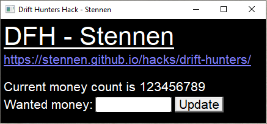

Stennen.github.io / Hacks / Drift Hunters - Part 2
Part 1
Hello again! In the previous part I went over on how to change the money count in the game Drift Hunters to anything, and today I'll make it into a GUI, using C and the win32 API.
Create a new project in Visual Studio, and then right click the project name in the solution and choose
Properties -> Linker -> System.
In here, you should now change SubSystem from Console (/SUBSYSTEM:CONSOLE) to Windows (/SUBSYSTEM:WINDOWS). Make sure you repeat this on all configurations, both Debug and Release!
Doing this will prevent a console from appearing on start up.
Change your current mode to Release x86, for maximum compatibility, and then create a DriftHuntersHack.c, and a DriftHuntersHack.h file.
In DriftHuntersHack.h, we will add the libraries needed, Windows.h and winreg.h.
#pragma once
#include <Windows.h>
#include <winreg.h>
#pragma comment(lib, "Advapi32.lib") // winreg's imports file
Let's also set up some definitions that we'll have use of:
#define DRIFT_HUNTERS_PLAYERPREFS_KEY TEXT("SOFTWARE\\studionum43\\Drift Hunters") // Registry key of Drift Hunters PlayerPrefs
Now let's set up the WinMain:
#include "DriftHuntersHack.h"
#pragma warning(disable : 28251)
int WINAPI wWinMain( HINSTANCE hInstance, HINSTANCE hPrevInstance,
PWSTR lpCmdLine, int nCmdShow ) {
return 0;
}
Now let's access the Drift Hunters PlayerPrefs key from here, using RegOpenKeyEx.
LSTATUS WINAPI DFHOpenPlayerPrefsKey( PHKEY phKey ) {
return RegOpenKeyEx(HKEY_CURRENT_USER, DRIFT_HUNTERS_PLAYERPREFS_KEY,
0, KEY_READ | KEY_WRITE, phKey);
}
We can now create a global variable for this key and initialize it from the wWinMain function:
HKEY hPlayerPrefsKey;
...
int WINAPI wWinMain( HINSTANCE hInstance, HINSTANCE hPrevInstance,
PWSTR lpCmdLine, int nCmdShow ) {
LSTATUS lstError;
lstError = DFHOpenPlayerPrefsKey( &hPlayerPrefsKey );
if (lstError != ERROR_SUCCESS)
DFHExitError(TEXT("Drift Hunters key failed to open. Are you sure Drift Hunters is installed?"));
RegCloseKey( hPlayerPrefsKey );
...
The helper function DFHExitError is defined as following:
__declspec(noreturn) void WINAPI DFHExitError( LPCTSTR lpctszMessage ) {
MessageBox(NULL, lpctszMessage, TEXT("Drift Hunters Hack - Stennen"), MB_ICONERROR);
ExitProcess(1);
}
Note that the __declspec(noreturn) makes the compiler aware that this function will not return.
As covered in the last part, Drift Hunters encodes some of its more sensitive PlayerPrefs keys & values with a special encoding. This encoding can easily be ported into C:
CONST CHAR pcEncodeTable[] = \
"A(BwCuDaEpFoGzHiIhJsKeLnMlNdOrPtQyRfSxT4UqVbW{X.Y;Z]0>1m2?304:5}6,7+8-9<,)|[_={1}7-*.^";
In this "map", each character of an index with an even number is the unencoded character, and the following character is the encoded character, and vice versa for the decoding.
We can therefore easily create encoding & decoding functions:
void WINAPI DFHEncodeString( LPSTR lpcszString ) {
while ( *lpcszString ){
for ( INT i = 0; i < (sizeof( pcEncodeTable ) - 1); i+=2 ) {
if (*lpcszString == pcEncodeTable[i]) {
*lpcszString = pcEncodeTable[i + 1];
break;
}
}
lpcszString++;
}
}
void WINAPI DFHDecodeString( LPSTR lpcszString ) {
while ( *lpcszString ){
for ( INT i = 1; i < (sizeof( pcEncodeTable ) - 1); i+=2 ) {
if (*lpcszString == pcEncodeTable[i]) {
*lpcszString = pcEncodeTable[i - 1];
break;
}
}
lpcszString++;
}
}
We can now use this to create a massive function that can encrypts a given value name & read and decrypts its contents.
// Return value should be passed to 'free' when no longer used
LPSTR WINAPI DFHReadEncryptedValue( LPCSTR valueName ) {
CHAR pcEncodedName[MAX_PATH];
DWORD dwValuesCount;
DWORD dwMaxValueNameLength;
DWORD dwValueType;
LSTATUS lStat;
if ( (strlen(valueName) + 1) > MAX_PATH )
DFHExitError(TEXT("Too long property passed to " TEXT(__FUNCTION__)));
StringCchCopyA(pcEncodedName, MAX_PATH, valueName);
DFHEncodeString( pcEncodedName );
StringCchCatA(pcEncodedName, MAX_PATH, "_");
DWORD dwNameLen = strlen( pcEncodedName );
if ( ERROR_SUCCESS != RegQueryInfoKey(hPlayerPrefsKey, NULL, NULL, NULL,
NULL, NULL, NULL, &dwValuesCount,
&dwMaxValueNameLength, NULL, NULL, NULL))
DFHExitError(TEXT("Failed to query key information"));
PCHAR pcValueName = ( PCHAR )malloc( dwMaxValueNameLength + 1 );
if ( !pcValueName )
DFHExitError(TEXT("Out of memory"));
for (DWORD dwVal = 0; dwVal < dwValuesCount; dwVal++) {
DWORD dwLen = dwMaxValueNameLength + 1;
DWORD dwDataLength = 0;
lStat = RegEnumValueA(hPlayerPrefsKey, dwVal, pcValueName, &dwLen, NULL, &dwValueType, NULL, &dwDataLength);
if (lStat != ERROR_SUCCESS)
DFHExitError(TEXT("RegEnumValueA Failed"));
if (dwLen > dwNameLen) {
if (!memcmp(pcValueName, pcEncodedName, dwNameLen)) {
dwDataLength++;
PCHAR pcData = malloc( dwDataLength );
if ( !pcData )
DFHExitError(TEXT("Out of memory"));
ZeroMemory(pcData, dwDataLength);
lStat = RegGetValueA(hPlayerPrefsKey, NULL, pcValueName, RRF_RT_REG_BINARY,
NULL, pcData, &dwDataLength);
if (ERROR_SUCCESS != lStat)
DFHExitError(TEXT("Failed to query value in DFHReadEncryptedValue"));
free( pcValueName );
DFHDecodeString( pcData );
return pcData;
}
}
}
free( pcValueName );
DFHExitError(TEXT("Failed to find wanted value, have you ran the game first?"));
}
This function very likely might be overwhelming, so here's a break down of what it does:
MAX_PATH (260). If it's greater than 258 (-1 due to underscore being added later on, additional -1 due to null terminator) it will throw an error._ to it. This is due to the format of the registry value names explained in the previous part. PLAYERMONEY -> tn(;pflrdp;_RegEnumValueA, in this loop the following will happen in order:pcEncodedName), in a hacky way.We can now easily create a function for creating the value by copying the read function and changing it a bit:
VOID WINAPI DFHWriteEncryptedValueContent( LPCSTR valueName, LPCSTR valueContents ) {
CHAR pcEncodedName[MAX_PATH];
CHAR pcEncodedValue[MAX_PATH];
DWORD dwValuesCount;
DWORD dwMaxValueNameLength;
DWORD dwValueType;
LSTATUS lStat;
if ( (strlen(valueName) + 1) >= MAX_PATH )
DFHExitError(TEXT("Too long property passed to " TEXT(__FUNCTION__)));
if ( strlen(valueContents) >= MAX_PATH )
DFHExitError(TEXT("Too long value passed to " TEXT(__FUNCTION__)));
StringCchCopyA(pcEncodedName, MAX_PATH, valueName);
DFHEncodeString( pcEncodedName );
StringCchCatA(pcEncodedName, MAX_PATH, "_");
StringCchCopyA(pcEncodedValue, MAX_PATH, valueContents);
DFHEncodeString( pcEncodedValue );
DWORD dwNameLen = strlen( pcEncodedName );
if ( ERROR_SUCCESS !=
RegQueryInfoKey(hPlayerPrefsKey, NULL, NULL, NULL,
NULL, NULL, NULL, &dwValuesCount,
&dwMaxValueNameLength, NULL, NULL, NULL))
DFHExitError(TEXT("Failed to query key information"));
PCHAR pcValueName = ( PCHAR )malloc( dwMaxValueNameLength + 1 );
if ( !pcValueName )
DFHExitError(TEXT("Out of memory"));
for (DWORD dwVal = 0; dwVal < dwValuesCount; dwVal++) {
DWORD dwLen = dwMaxValueNameLength + 1;
lStat = RegEnumValueA(hPlayerPrefsKey, dwVal, pcValueName, &dwLen, NULL, &dwValueType, NULL, NULL);
if (lStat != ERROR_SUCCESS)
DFHExitError(TEXT("RegEnumValueA Failed"));
if (dwLen > dwNameLen) {
if (!memcmp(pcValueName, pcEncodedName, dwNameLen)) {
lStat = RegSetValueExA(hPlayerPrefsKey, pcValueName, 0, REG_BINARY,
(CONST BYTE*)pcEncodedValue, strlen(pcEncodedValue) + 1);
if (ERROR_SUCCESS != lStat)
DFHExitError( TEXT("Failed to set value using RegSetValueExA") );
free( pcValueName );
return;
}
}
}
free( pcValueName );
DFHExitError(TEXT("Failed to find value in DFHWriteEncryptedValueContent"));
}
We can now easily create a function to fetch the current amount of money in Drift Hunters:
INT WINAPI DFHGetMoney(void) {
PSTR pcszMoney = DFHReadEncryptedValue("PLAYERMONEY");
INT nMoney = strtol(pcszMoney, NULL, 10);
free( pcszMoney );
return nMoney;
}
Now let's create a global variable that represents the current amount of money (when last fetched).
INT currentMoneyCount = 0;
Now we can continue the wWinMain function to retrieve the current money count.
currentMoneyCount = DFHGetMoney( );
Now let's try making a Windowed GUI for this. I will go for a simple, not so detailed style but you can do whatever you feel like.
First, let's create & register a window class.
WNDCLASSEX wndClass;
ZeroMemory(&wndClass, sizeof( WNDCLASSEX ));
wndClass.lpszClassName = TEXT("Drift Hunters Hack By Stennen");
wndClass.hCursor = LoadCursor(NULL, IDC_ARROW);
wndClass.hbrBackground = ( HBRUSH )(COLOR_WINDOW + 1);
wndClass.hInstance = hInstance;
wndClass.lpfnWndProc = DFHWndProc;
wndClass.style = CS_VREDRAW | CS_HREDRAW;
wndClass.cbSize = sizeof( WNDCLASSEX );
if ( !RegisterClassEx(&wndClass) )
DFHExitError(TEXT("Failed to register WndClass"));
CS_VREDRAW | CS_HREDRAW means that whenever the window is resized both vertically or horizontally, the entire window will be redrawn.IDC_ARROW is the default arrow/pointer cursor, which will be shown whenever the user is hovering over the window.
We can now create and show the window:
HWND hWnd = CreateWindowEx(0, wndClass.lpszClassName, TEXT("Drift Hunters Hack - Stennen"),
WS_OVERLAPPEDWINDOW, CW_USEDEFAULT, CW_USEDEFAULT, 450, 210, NULL,
NULL, hInstance, NULL);
if ( !hWnd )
DFHExitError(TEXT("Failed to create window"));
ShowWindow(hWnd, nCmdShow);
Then we can handle the messages and free up some memory after the window got closed:
MSG msg;
while ( GetMessage(&msg, 0, 0, 0) > 0 ) {
TranslateMessage(&msg);
DispatchMessage(&msg);
}
UnregisterClass(wndClass.lpszClassName, hInstance);
RegCloseKey( hPlayerPrefsKey );
return 0;
We can now start creating the wndProc.
#pragma warning(disable : 6385)
LRESULT CALLBACK DFHWndProc( HWND hWnd, UINT uMsg, WPARAM wParam, LPARAM lParam ) {
The warning 6385 is in this function brought up, but as a false-positive. We silence it using #pragma warning(disable).
Now let's setup the variables we'll use:
PAINTSTRUCT ps;
HDC hDC;
HFONT hFont;
static HFONT hInputFont = NULL;
HBRUSH hbr;
TCHAR txt[256];
INT nTextLength;
static HWND hWndInput = NULL;
static HWND hWndButton = NULL;
CHAR inputData[10];
We can now start handling messages, firstly we'll handle the WM_CREATE message which is sent almost right after the window is created. Here we'll setup an input and a button.
switch ( uMsg ) {
case WM_CREATE:
hWndInput = CreateWindow(TEXT("EDIT"), 0, WS_BORDER | WS_CHILD | WS_VISIBLE,
155, 129, 125, 24, hWnd, ( HMENU )CMD_INPUT,
( HINSTANCE )GetWindowLong(hWnd, GWLP_HINSTANCE), 0);
hWndButton = CreateWindow(TEXT("BUTTON"), TEXT("Update"), WS_BORDER | WS_CHILD | WS_VISIBLE,
285, 128, 80, 26, hWnd, ( HMENU )CMD_BUTTON,
( HINSTANCE )GetWindowLong(hWnd, GWLP_HINSTANCE), 0);
hInputFont = CreateFont(24, 0, 0, 0, FW_DONTCARE, FALSE, FALSE, FALSE, DEFAULT_CHARSET,
OUT_OUTLINE_PRECIS, CLIP_DEFAULT_PRECIS, CLEARTYPE_QUALITY, VARIABLE_PITCH,
TEXT("Arial"));
// Change font of button and input.
SendMessage(hWndInput, WM_SETFONT, ( WPARAM )hInputFont, TRUE);
SendMessage(hWndButton, WM_SETFONT, ( WPARAM )hInputFont, TRUE);
break;
This code also changes the font of the input and button to the Arial font.
Now let's handle the WM_PAINT message. This is sent to the window whenever it shall be painted.
case WM_PAINT:
hDC = BeginPaint(hWnd, &ps);
hFont = CreateFont(48, 0, 0, 0, FW_DONTCARE, FALSE, TRUE, FALSE, DEFAULT_CHARSET,
OUT_OUTLINE_PRECIS, CLIP_DEFAULT_PRECIS, CLEARTYPE_QUALITY, VARIABLE_PITCH,
TEXT("Arial"));
hbr = CreateSolidBrush(0);
SelectObject(hDC, hbr);
Rectangle(hDC, ps.rcPaint.left, ps.rcPaint.top, ps.rcPaint.right, ps.rcPaint.bottom);
SelectObject(hDC, hFont);
SetBkMode(hDC, TRANSPARENT);
SetTextColor(hDC, RGB(255, 255, 255));
DrawText(hDC, TEXT("DFH - Stennen"), -1,
&(RECT) { 5, 5, ps.rcPaint.right, ps.rcPaint.bottom },
DT_LEFT | DT_NOCLIP);
DeleteObject(hFont);
hFont = CreateFont(24, 0, 0, 0, FW_DONTCARE, FALSE, TRUE, FALSE, DEFAULT_CHARSET,
OUT_OUTLINE_PRECIS, CLIP_DEFAULT_PRECIS, CLEARTYPE_QUALITY, VARIABLE_PITCH,
TEXT("Arial"));
SelectObject(hDC, hFont);
SetTextColor(hDC, RGB(125, 125, 255));
DrawText(hDC, TEXT("https://stennen.github.io/hacks/drift-hunters/"), -1,
&(RECT) { 5, 55, ps.rcPaint.right, ps.rcPaint.bottom },
DT_LEFT | DT_NOCLIP);
DeleteObject(hFont);
hFont = CreateFont(24, 0, 0, 0, FW_DONTCARE, FALSE, FALSE, FALSE, DEFAULT_CHARSET,
OUT_OUTLINE_PRECIS, CLIP_DEFAULT_PRECIS, CLEARTYPE_QUALITY, VARIABLE_PITCH,
TEXT("Arial"));
SelectObject(hDC, hFont);
SetTextColor(hDC, RGB(255, 255, 255));
StringCchPrintf(txt, 256, TEXT("Current money count is %d"), currentMoneyCount);
DrawText(hDC, txt, -1,
&(RECT) { 5, 100, ps.rcPaint.right, ps.rcPaint.bottom },
DT_LEFT | DT_NOCLIP);
DrawText(hDC, TEXT("Wanted money:"), -1,
&(RECT) { 5, 129, ps.rcPaint.right, ps.rcPaint.bottom },
DT_LEFT | DT_NOCLIP);
DeleteObject(hbr);
DeleteObject(hFont);
EndPaint(hWnd, &ps);
break;
This creates this minimal, but decent looking UI:
Now let's make the window able to get destroyed, by handling the WM_DESTROY message:
case WM_DESTROY:
PostQuitMessage( 0 );
DeleteObject( hInputFont );
break;
Great! But there's an issue with the input, we can enter anything, numerical or not.
Let's fix it:
case WM_COMMAND:
switch ( LOWORD( wParam ) ) {
case CMD_INPUT:
// There can be a max number of 9 nines before overflowing the
// 32 bit integer limit. nTextLength includes NULL-terminator.
nTextLength = min(GetWindowTextLengthA( hWndInput ) + 1, 10);
GetWindowTextA(hWndInput, inputData, nTextLength);
if (nTextLength <= 1)
break;
if (inputData[0] == '-' && nTextLength == 2)
break;
BOOLEAN bNegative = inputData[0] == '-',
bChanged = FALSE;
INT len = strlen( inputData );
for (INT i = bNegative; i < len; i++) {
if (!inputData[i])
break;
// Remove non-numerical characters
if (!(inputData[i] >= '0' && inputData[i] <= '9')) {
memcpy(inputData + i, inputData + i + 1, len - i);
len--;
bChanged = TRUE;
}
}
inputData[len] = 0;
if (bChanged)
SetWindowTextA(hWndInput, inputData);
break;
Nice, we can now only input numbers.
Note: Drift Hunters actually supports negative amounts of money, so why ruin the fun by not allow it setting to a negative number?
Let's continue adding code into the WM_COMMAND message by doing the final thing; Actually changing the money count!
case CMD_BUTTON:
nTextLength = min(GetWindowTextLengthA( hWndInput ) + 1, 10);
GetWindowTextA(hWndInput, inputData, nTextLength);
if (nTextLength <= 1)
break;
if (inputData[0] == '-' && nTextLength == 2)
break;
INT nWantedMoney = (INT)strtol(inputData, NULL, 10);
StringCchPrintfA(inputData, 10, "%d", nWantedMoney);
SetWindowTextA(hWndInput, inputData); // Normalize number
DFHWriteEncryptedValueContent("PLAYERMONEY", inputData); // Write new money count
currentMoneyCount = DFHGetMoney();
InvalidateRect(hWnd, NULL, TRUE); // Redraw the window; update money count
break;
}
break;
Now let's handle the case where none of these messages where recieved:
default:
return DefWindowProc(hWnd, uMsg, wParam, lParam);
Awesome! We now finished the program entirely actually.